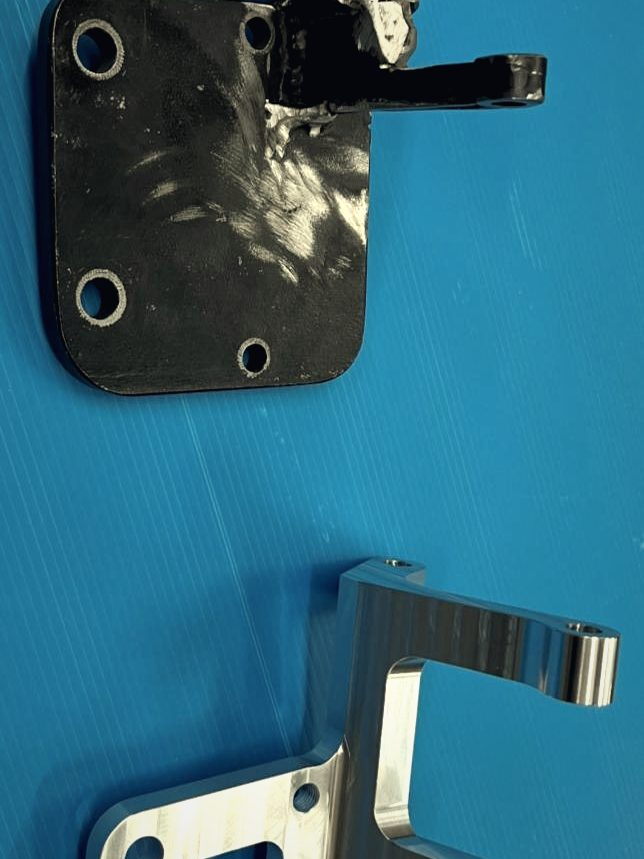
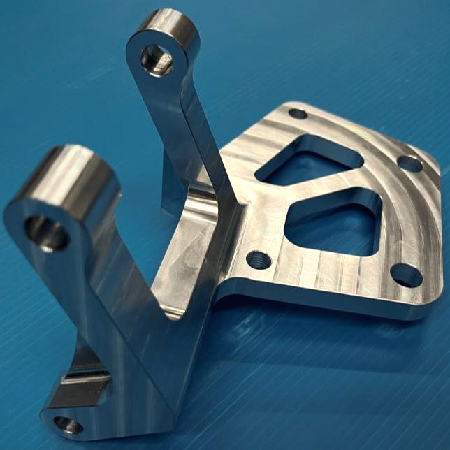

Lichtmaschinenhalter
Aus einem geschweißten Dummy wurde ein gefrästes Teil.
Der Kunde stellte einen geschweißten Funktionsdummy bei, mehr nicht. Wir haben ihn auf der 3D-Koordinatenmessmaschine vermessen, Form und Gewicht optimiert und den Halter anschließend aus dem Vollen gefertigt. So sieht individuelle Fertigung bei uns aus.